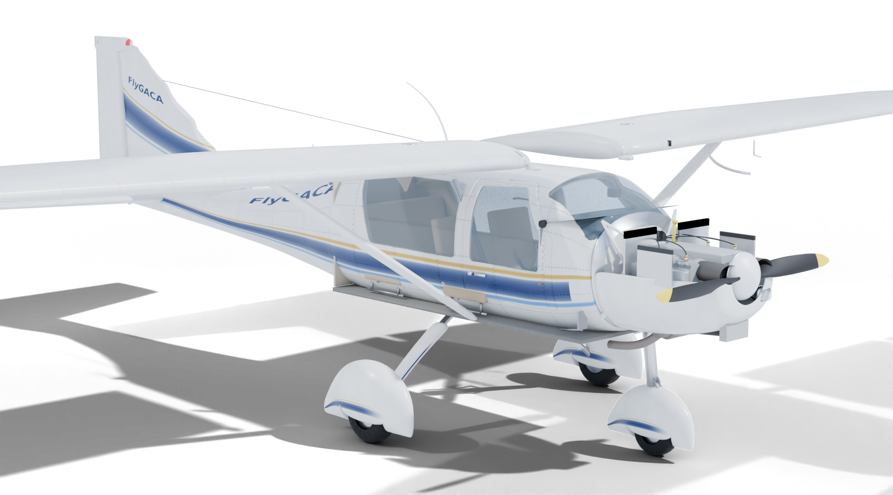
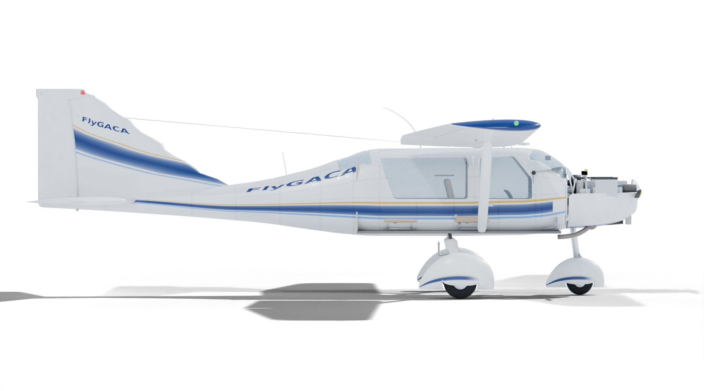
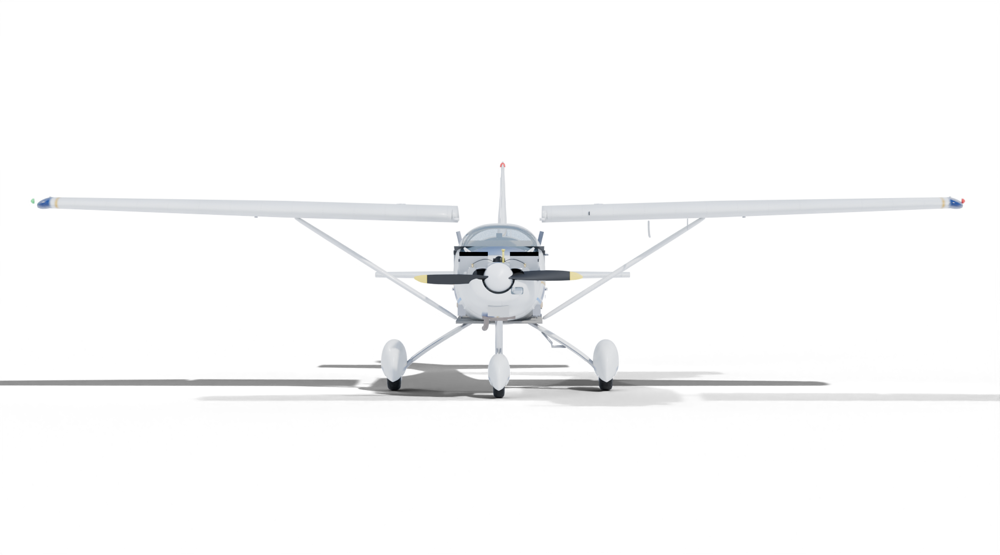
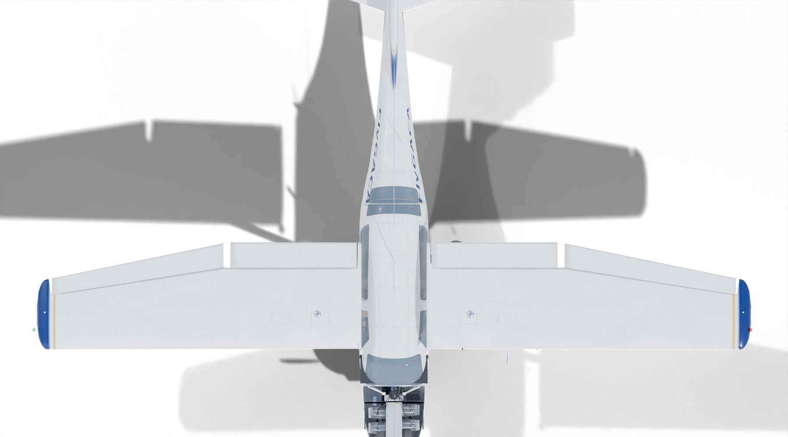
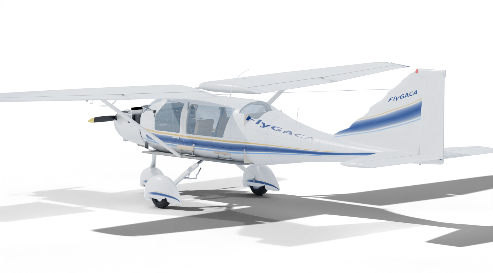
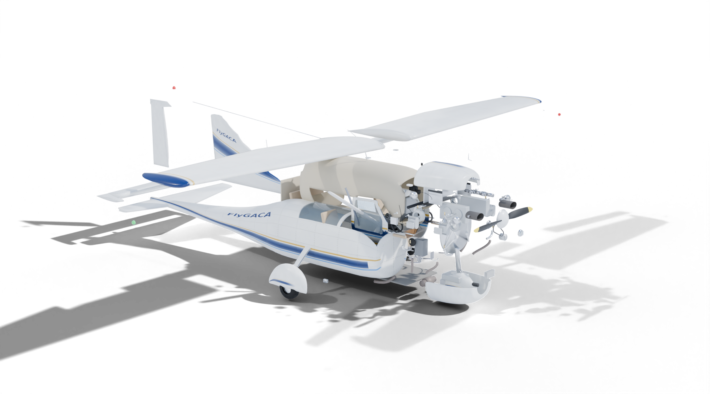

Cessna 172N (1979) — renders for the bookسيسنا 172N (1979) — صور للكتاب
Every view is a transparent PNG at print size (1800 × 1000, Cycles, 96 samples) with a shadow catcher, so it can sit on any page colour. Labels are live text, not baked into the image — changing a word never means re-rendering. Built from models/C172N_realistic.blend with npm run gallery8.كل صورة PNG شفافة بحجم الطباعة (1800 × 1000، Cycles، 96 عينة) مع التقاط الظل، فتناسب أي لون صفحة. التسميات نص حي وليست مدمجة في الصورة، فتغيير كلمة لا يعني إعادة التصيير. مبنية من models/C172N_realistic.blend بالأمر npm run gallery8.
Educational model: overall dimensions from the 1979 POH Figure 1-1; sections, windows, cowl and panel estimated from photographs. Not Cessna drawings.نموذج تعليمي: الأبعاد الكلية من الشكل 1-1 في POH 1979؛ المقاطع والنوافذ والغطاء واللوحة تقديرية من الصور. ليست رسومات Cessna.
Exteriorالخارج

Three-quarter frontمنظر أمامي جانبي
hero · 30° lens

Side profile — long lens, wings read as thin linesالمنظر الجانبي — عدسة طويلة فتبدو الأجنحة خطوطًا رفيعة
13° lens at 42 m

Front — 1° 44′ dihedral, strut-braced wing, 8 ft 3½ in trackالأمام — زاوية ميل 1° 44′، جناح مدعوم، مسافة العجلات 8 أقدام و3½ بوصة

Plan — 35 ft 10 in span, constant-chord inboard panel, tapered tips, flaps and aileronsالمسقط العلوي — باع 35 قدمًا و10 بوصات، جزء داخلي ثابت الوتر، أطراف مستدقة، قلابات وجنيحات

Rear three-quarter — swept fin with dorsal fillet, elevator horns, trim tabمنظر خلفي جانبي — مثبت مائل بزعنفة ظهرية، أذرع موازنة الرافع، لسان الموازنة
Exploded assemblyالتجميع المفكك

Exploded assembly — every system group moved away from its centre (same rule as the viewer's explode slider)تجميع مفكك — كل مجموعة نظام مُبعدة عن مركزها (القاعدة نفسها المستخدمة في شريط التفكيك بالعارض)